![[*]](imgLibStellarium/imgStel097.png) (depending on the time of day that you start the program).
(depending on the time of day that you start the program).
Stellarium is an open source software project that allows people
to use their home computer as a virtual planetarium. It will
calculate the positions of the Sun and Moon, planets and stars, and draw how the
sky would look to an observer depending on their location and the time. It can
also draw the constellations and simulate astronomical phenomena such as meteor
showers, and solar or lunar eclipses. It is an excellent tool recommended
for use alongside Astrolab.
This page is not intended to just repeat all of the previous online user guide
but to document details we have found useful as a companion to Astrolab.
It is recommended that you also refer to the main user guide from www.stellarium.org as well, as this
guide is not intended to contain general astronomy information that is available
in the main guide, elsewhere in Astrolab, or in books. This guide also concentrates on the iMac version of the application and on parts
of the application actually tested, so again not all sections in the official
manual may be covered.
The topics covered are the initial installation, startup, configuration and use, with each then broken down into more detail.
MacOS X
|
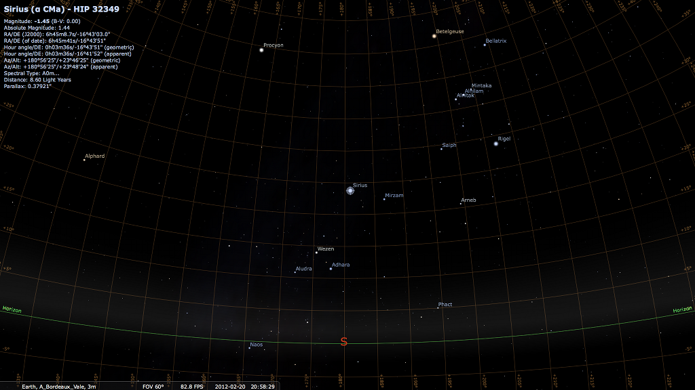
|
After you run Stellarium for the first time, you will see a something
like one of the sides of the image shown in Figure
(depending on the time of day that you start the program).
At the top of the screen you will see: the date, the time, Stellarium's version number, the location of the observer, the field of view (FOV) and the current frame-rate (FPS). In the bottom-left corner of the screen is the main tool-bar. In the bottom-right corner of the screen is the time tool-bar. The rest of the screen is a graphical representation of the sky and the ground.
When Stellarium starts up, it sets its clock to the
same time and date as the system clock. However,
Stellarium's clock is not fixed to same time and date as the system
clock, or indeed to the same speed. We may tell Stellarium to change
how fast time should pass, and even make time go backwards!
So the first thing we shall do is to travel into the future! Let's
take a look at the time tool-bar (table ).
If you hover the mouse cursor over the buttons, a short description
of the button's purpose and keyboard shortcut will appear.
|
OK, so lets go see the future! Click the mouse once on the increase
time speed button  .
Not a whole lot seems to happen. However, take a look at the clock
at the top-left of the screen. You should see the time going by faster
than a normal clock! Click the button a second time. Now the time
is going by faster than before. If it's night time, you might also
notice that the stars have started to move slightly across the sky.
If it's daytime you might be able to see the sun moving (but it's
less apparent than the movement of the stars). Increase the rate at
which time passes again by clicking on the button a third time. Now
time is really flying!
.
Not a whole lot seems to happen. However, take a look at the clock
at the top-left of the screen. You should see the time going by faster
than a normal clock! Click the button a second time. Now the time
is going by faster than before. If it's night time, you might also
notice that the stars have started to move slightly across the sky.
If it's daytime you might be able to see the sun moving (but it's
less apparent than the movement of the stars). Increase the rate at
which time passes again by clicking on the button a third time. Now
time is really flying!
Let time move on at this fast speed for a little while. Notice how the stars move across the sky. If you wait a little while, you'll see the Sun rising and setting. It's a bit like one of those time-lapse movies except there are no clouds. Stellarium not only allows for moving forward through time - you can go backwards too!
Click on the real time speed button  .
The stars and/or the Sun should stop scooting across the sky. Now
press the decrease time speed button
.
The stars and/or the Sun should stop scooting across the sky. Now
press the decrease time speed button  once. Look at the clock. Time has stopped. Click the Decrease time
speed button four or five more times. Now we're falling back through
time at quite a rate (about one day every ten seconds!).
once. Look at the clock. Time has stopped. Click the Decrease time
speed button four or five more times. Now we're falling back through
time at quite a rate (about one day every ten seconds!).
Enough time travel for now. Wait until it's night time, and then click the Real time speed button. With a little luck you will now be looking at the night sky.
|
As well as travelling through time, Stellarium lets to look around
the sky freely, and zoom in and out. There are several ways to accomplish
this listed in table .
Let's try it. Use the cursors to move around left, right, up and down. Zoom in a little using the Page Up key, and back out again using the Page Down. Press the backslash key and see how Stellarium returns to the original field of view (how ``zoomed in'' the view is), and direction of view.
It's also possible to move around using the mouse. If you left-click and drag somewhere on the sky, you can pull the view around.
Another method of moving is to select some object in the sky (left-click on the object), and press the Space key to centre the view on that object. Similarly, selecting an object and pressing the forward-slash key will centre on the object and zoom right in on it.
The forward-slash and backslash keys auto-zoom in an out to different levels depending on what is selected. If the object selected is a planet or moon in a sub-system with a lot of moons (e.g. Jupiter), the initial zoom in will go to an intermediate level where the whole sub-system should be visible. A second zoom will go to the full zoom level on the selected object. Similarly, if you are fully zoomed in on a moon of Jupiter, the first auto-zoom out will go to the sub-system zoom level. Subsequent auto-zoom out will fully zoom out and return the initial direction of view. For objects that are not part of a sub-system, the initial auto-zoom in will zoom right in on the selected object (the exact field of view depending on the size/type of the selected object), and the initial auto-zoom out will return to the initial FOV and direction of view.
Stellarium can
do a whole lot more than just draw the stars. Figure
shows some of Stellarium's visual effects including constellation
line and boundry drawing, constellation art,
planet hints, and atmospheric fogging
around the bright Moon. The controls main tool-bar provides
a mechanism for turning on and off the visual effects.
Table describes the operations of buttons on
the main tool-bar, and gives their keyboard shortcuts.
|
As you type, Stellarium will make a list of objects which begin with what you have typed so far, and the first item in this list will be automatically added to what you are typing (after the cursor). When you have typed enough letters to get to the object you are interested in, you can press return without having to complete the whole name.
For example, suppose we want to locate Mimas (a moon of Saturn). After typing the first letter of the name, m, Stellarium makes a list of objects whose name begins with M: Mars, Miranda, Mimas, Mercury, Moon. The first item in this list, Mars, is automatically filled in for us. Pressing return now would go to Mars, but we want Mimas, so we keep typing. After the letter i, Miranda is auto-completed. Again, it's not what we want, so we continue. After the third letter, m, Mimas is selected, so we simply press return or click the go button to locate it.
This feature can save some typing, and is useful for finding objects whose spelling is not certain.
The Help window
is useful as a quite reference to the key-strokes that may be used
to control various aspects of Stellarium. See section
for a complete list of key-bindings.
Pressing the `i' key on the keyboard toggles the display of the information window. This displays the version number of Stellarium and some information about the project.
As well as the regular key-bindings and the tool-bars, Stellarium
has another method for interaction with the user - the Text Menu,
or Text User Interface (TUI). The TUI is activated using
the m key, and is navigated using the cursor keys. Appendix
describes the commands that are available from the TUI menu.
The TUI menu is primarily used in Digitalis planetarium projectors,
where the TUI menu is controlled using a remote control by the planetarium
operator, but it is useful for the desktop user as well. Many of the
options in the TUI menu are duplicated elsewhere in the interface.
For example, the ability to set the maximum star magnitude
to label is also accessible via the configuration window
(see section ).
As mentioned in section ,
not all keys are documented in the Help window.
Some features of Stellarium are only available via the keyboard, and
are not easy to discover! Here is a full listing of Stellarium's key
bindings.
| Category | Key | Description
|
| Movement & object selection | Page up/down | Zoom in/out |
| CTRL+up/down cursors | Zoom in/out | |
| Mouse wheel | Zoom in/out | |
| Left mouse button | Select object | |
| Right mouse button | De-select object | |
| Backslash (\) | Auto-zoom out | |
| Forward-slash (/) | Auto-zoom in on selected object | |
| Space | Centre on selected object | |
| Display Options | Enter | Swap between equatorial and azimuthal mount |
| F1 | Toggle full-screen mode (not available on some architectures) | |
| c | Toggle drawing of constellations | |
| b | Toggle drawing of constellation boundaries | |
| v | Toggle drawing of constellation names | |
| r | Toggle drawing of constellation art | |
| d | Toggle star names | |
| n | Toggle nebulae names off / on (short) / on (long) | |
| e | Toggle drawing of RA/Dec grid | |
| z | Cycle through: show meridian line; show Alt/Azi grid; neither. | |
| p | Cycle through: no planet labels; planet labels; planet labels with orbits | |
| g | Toggle drawing of ground | |
| a | Toggle drawing of atmosphere | |
| f | Toggle drawing of horizon fog | |
| q | Toggle drawing of cardinal points (N, S, E, W) | |
| o | Toggle moon scaling (4x /1x) | |
| t | Toggle object tracking (moves the view to keep selected object in the centre) | |
| s | Toggle drawing of stars | |
| 4 or , | Cycle through: draw ecliptic; draw ecliptic & planet trails; draw neither | |
| 5 or . | Toggle drawing of equator line | |
| Windows & other controls | CTRL+s | Take a screenshot (will be written to stellarium*.bmp) |
| CTRL+r | Toggle script recording | |
| CTRL+f | Toggle search window | |
| h | Toggle help window | |
| i | Toggle information window | |
| 1 (digit one) | Toggle configuration window | |
| m | Toggle text menu | |
| ESC | Close any open windows (help, info, & configuration) | |
| Time & Date | 6 | Time rate pause (or script pause when a script is running) |
| 7 | Set time rate to zero (time stands still) | |
| 8 | Set time to current time | |
| j | Decrease time rate (or decrease script speed if a script is running) | |
| k | Set time rate to normal (1 second per second) | |
| l | Increase time rate (or increase script speed if a script is running) | |
| - | Move back in time 24 hours (press the ALT key at the same time to move back one sidereal day, or CTRL to move back one hour) | |
| = | Move forward in time 24 hours (press the ALT key at the same time to move forward one sidereal day, or CTRL to move forward one hour) | |
| [ | Move back in time 7 days (press the ALT key at the same time to move back 7 sidereal days) | |
| ] | Move forward in time 7 days (press the ALT key at the same time to move forward 7 sidereal days) | |
| Other | CTRL+c | Stop a running script |
| CTRL+q | Quit Stellarium. (command+Q on the Mac) | |
| < | Volume down (only when a script is playing) | |
| > | Volume up (only when a script is playing) | |
| 9 | Cycle through meteor shower rates: low; medium; high; very high | |
| CTRL+SHIFT+h | toggle horizontal image flipping (see section ) |
|
| CTRL+SHIFT+v | toggle vertical image flipping (see section ) |
|
| CTRL+SHIFT+g | If the currently selected object is a solar system body, move the observer to that body. | |
| CTRL+[num] | Make telescope [num] point at currently selected object (see
section ) |
Most of Stellarium's configuration is done using the configuration window. To open the configuration window, click the button on the main tool-bar. You can also press the `1' key (digit one) to open the configuration window. The window has several tabs for configuring various aspects of the program.
In addition to the configuration window, some operations may also
be performed using the text menu (see section ).
Some options may only be configured by editing the configuration file.
See section for more details.
The second tab in the configuration window
is ``Date & Time'' (figure ). In this tab
you will see controls for adjusting the year, month, day, hour, minute
and second.
There is also a display of the current time zone
setting, and time rate. The time zone setting may
be set using the TUI (see section for more
information).4.1
The positions of the stars in the sky is dependent on your location on Earth as well as the time and date. For Stellarium to show accurately what is (or will be/was) in the sky, you must tell it where you are. You only need to do this once - Stellarium saves your location so you won't need to set it again until you move.
To set your location, choose the ``Location'' tab in the configuration
window (figure ).
There are then three main methods4.2 that you may use to select your location:
Stellarium has several horizon graphics or landscapes. These may be changed by choosing the options under the Landscapes tab in the configuration window.
If the "Setting landscape updates the location" box is checked, changing the landscape will also change the location of the observer. This will set the home planet as well, if the landscape which is selected is for a different planet.
The Video tab in the configuration window
(figure ) offers the following setting options:
The Rendering tab (figure ) in the configuration
window allows for
adjustment of the way Stellarium draws the scene. All the controls
are check boxes or numerical spin-buttons. By choosing values and
then clicking the button labelled `Set as default', the user can select
what options will be set when the program is started in future. Table
shows a list of these options and describes what
they do.
|
Stellarium supports several languages to some degree, although the internationalisation process is not yet complete.
When you first start Stellarium, it will try to determine the most
appropriate language settings from your system settings. You may also
customise your language settings in the Language tab of the configuration
window (see figure
).
In the language tab there are the following controls:
Stellarium has many data files containing such things as star catalogue data, nebula images, button icons, font files and configuration files. When Stellarium looks for a file, it looks in two places. First, it looks in the user directory for the account which is running Stellarium. If the file is not found there, Stellarium looks in the installation directory5.1. Thus it is possible for Stellarium to be installed as an administrative user and yet have a writable configuration file for non-administrative users. Another benefit of this method is on multi-user systems: Stellarium can be installed by the administrator, and different users can maintain their own configuration and other files in their personal user accounts.
In addition to the main search path, Stellarium saves some files in other locations, for example screens shots and recorded scripts.
The locations of the user directory, installation directory, screenshot save directory and script save directory vary according to the operating system and installation options used. The following sections describe the locations for various operating systems.
Within the installation directory
and user directory (defined in section
), files are arranged in the following
sub-directories.
It is also possible to add new landscapes or scripts by creating the relevant files and directories within the user directory, leaving the installation directory unchanged. In this manner different users on a multi-user system can customise Stellarium without affecting the other users.
The main configuration file is read each time Stellarium starts up, and settings such as the observer's location and display preferences are taken from it. Ideally this mechanism should be totally transparent to the user - anything that is configurable should be configured ``in'' the program GUI. However, at time of writing Stellarium isn't quite complete in this respect. Some settings can only be changed by directly editing the configuration file. This section describes some of the settings a user may wish to modify in this way, and how to do it.
If the configuration file does not exist in the user directory
when Stellarium is started (e.g. the first time the user starts the
program), one will be created with default values for all settings
(refer to section for the location
of the user directory on your operating system). The name of the configuration
file is config.ini5.2.
The configuration file is a regular text file, so all you need to edit it is a text editor like Notepad on Windows, Text Edit on the Mac, or nano/vi/gedit etc. on Linux.
The following sub-sections contain details on how to make commonly
used modifications to the configuration file. A complete list of configuration
file values may be found in appendix .
The user interface for setting the observer's longitude and latitude isn't very precise. For users with a penchant for accuracy, satisfaction may be achieved by editing the values in the configuration file like this:
If your screen resolution is not listed in the video tab of the configuration window, you may edit the configuration file to select it. It is also possible to specify how Stellarium should start - in windowed or full-screen mode:
Individual script commands
(see section ) may be entered and executed interactively
using a feature called the script bar. This feature is not
enabled by default, but you can enable it by altering the configuration
file:
Stellarium tries to determine the time zone based on your system settings. It is possible to over-ride this by specifying the time zone in the main configuration file.
Stellarium's behaviour can be modified
by providing parameters to the program when it is run, via the command
line. See table for a full list.
|
To start Stellarium using the configuration file, configuration_one.ini situated in the user directory:
stellarium -c configuration_one.ini
Stellarium is packaged with over 600 thousand stars in the catalogue,
but much larger star catalogues are available for download from the
sourceforge download site.
To use these catalogues, download the files and save them in the stars/default/
sub-directory of either the Installation Directory or the User Directory
(see section ).
There are five extra catalogue files available.
NOTE: You should have at least 512 MiB of RAM to load files stars_4_2v0_0.cat to stars_4_2v0_0.cat, and at least 1 GiB RAM to load the largest file (stars_8_2v0_0.cat).
See section for details of the contents
of these files.
Stellarium has the ability to record and play back sequences of commands in much the same way some applications allow the recording and executing of macros.
Using this mechanism it is possible to create presentations of astronomical events using Stellarium. Two scripts come with Stellarium that explore lunar eclipses. More are likely to be included in future releases of Stellarium5.3.
Scripts are found either <installation directory>/scripts or <user directory>/scripts and have the file name extension .sts. Some scripts may use image files. These may be placed in the same directory as the .sts file unless aome other path is specified in the script when referring to such files.
If you created a new script file while the text menu was active, you must turn off the text menu and turn it on again before the script will be avaiable in the menu.
Pressing CTRL-r will start and
stop script recording. Refer to section
to find out where script files will be created for your operating
system.
Recorded script files are created with a file name, recorded-*.sts, where the * is a three digit number. Thus the first recorded script will be called recorded-000.sts, the second recorded-001.sts and so on.
If you wish to rename a recorded script you should simply navigate
to the scripts sub-directory of the user directory
and rename the file as appropriate (see section
for the location of the user directory on your operating system).
Manually editing a script file may be done
using a simple text editor. To get yourself started, record a quick
script - go to a few objects using find and clicking on them, zoom
in and out using auto-zoom and see what this generates in the script
file. For a complete list of scripting commands see appendix .
This example script shows the occultation of Jupiter by the Moon in 2004. Note that the atmosphere and ground rendering is turned off so that they are not in the way if the location of the observer is set such that the event is not in the night time and/or above the horizon. This is a useful technique for scripting to avoid the need to set the location.
).
Stellarium can simulate light pollution. This effect is turned on by using the TUI menu. Press the key and navigate to item 6.1: Light Pollution Luminance. If the value of this setting is greater than 0, an orange glow will be seen in the night sky. The higher the value, the greater the brightness of the light pollution.
The brightness of the light pollution will affect the brightness of the stars which are visible at a given zoom level - the more light pollution the brighter stars have to be to be visible.
An example location section:
planet = Earth
latitude = +48d10'9.707"
longitude = +11d36'32.508"
altitude = 83
Extended objects are those which are external to the solar system, and are not point-sources like stars. Extended objects include galaxies, planetary nebulae and star clusters. These objects may or may not have images associated with them. Stellarium comes with a catalogue of about 13,000 extended objects, with images of over 100.
To add a new extended object, add an entry in the .../nebulae/default/ngc2000.dat
file with the details of the object (where ... is either the installation
directory or the user directory). See section
for details of the file format.
If the object has a name (not just a catalogue number), you should
add one or more records to the .../nebulae/default/ngc2000names.dat
file. See section for details of the file
format.
If you wish to associate a texture (image) with the object, you must
also add a record to the .../nebulae/default/nebula_textures.fab
file. See section for details of the
file format.
Nebula images should have dimensions which are integer powers of two, i.e. 1, 2, 4, 8, 16, 32, 64, 128, 256, 512, 1024 ... pixels along each side. If this requirement is not met, your textures may not be visible, or graphics performance may be seriously impacted. PNG or JPG formats are both supported.
Each deep sky image has one line in the ngc2000.dat file in the .../nebulae/default/ directory (where ... is either the installatiom directory or the user directory). The file is a plain ASCII file, and may be edited with a normal text editor. Each line contains one record, each record consisting of the following fields:
| Offset | Length | Type | Description |
| 0 | 1 | %c | Describes the catalogue type. I = Index Catalogue, anything else means NGC |
| 1 | 6 | %d | Catalogue number |
| 8 | 3 | %3s | Sets nType.
Possible values:
'Gx ' NEB_OC
'OC ' NEB_GC
'Gb ' NEB_N
'Nb ' NEB_PN
'Pl '
' '
' - '
' * '
'D* '
'***'
'C+N' NEB_CN
' ? ' NEB_UNKNOWN |
| 12 | 9 | %d %f | Right ascention hour; right ascention minute |
| 21 | 1 | %c | Declination degree sign |
| 22 | 7 | %d %f | Declination degree; Declination minute |
| 40 | 7 | %f | Angular size |
| 47 | 6 | %f | Magnitude |
Each line in the ngc2000names.dat file contains one record. A record relates an extended object catalogue number (from ngc2000.dat) with a name. A single catalogue number may have more than one record in this file.
The record structure is as follows:
| Offset | Length | Type | Description |
| 0 | 35 | %35s | Name (Note that messier numbers should be ``M'' then three spaces, then the number). |
| 37 | 1 | %c | |
| 38 | %d | Catalogue number | |
| 44 | 30? | %s | ? |
If an object has more than one record in the ngc2000names.dat file, the last record in the file will be used for the nebula label.
Each line in the nebula_textures.fab file is one record. Records are whitespace separated so there are not strictly any offsets for particlar fields. Note that filenames may not contains spaces, and are case sensitive.
Lines with the # character in the first column are considered to be comments and will be ignored. Empty lines are ignored.
The record format is as follows:
| Type | Description |
| int | Catalogue number |
| float | Right ascention |
| float | Declination |
| float | Magnitude |
| float | Texture angular size |
| float | Texture rotation |
| string | Texture filename (including .png extension) |
| string | Credit |
Images files should be copied to the .../nebulae/<set>/ directory (where <set> is the name of the nebula texture set to be modified which is usually default. Images should be in PNG or JPEG format. Images should have an aspect ratio of 1 (i.e. it should be square), and should have a width & height of 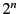 pixels, where is a positive integer (i.e. 2, 4, 8, 16, 32, 64, 128, 256, 512, and so on).
Black is interpretted as being 100% transparent. Ensure that the background of the image is totally black (i.e. has RGB values 0, 0, 0), and not just nearly black since this can cause an ugly square around the object.
There is a lot of software which may be used to create / modify PNG and JPEG images. The author recommends the GNU Image Manipulation Program (GIMP), since it is more than up to the job, and is free software in the same spirit as Stellarium itself.
Planetary bodies include planets, dwarf planets, moons, comets and asteroids. The orbits and physical characteristics of these bodies are described in the .../data/ssystem.ini file.
The file format follows .ini file conventions. Each section
in the file represents the data for one planetary body. Each section
has values as described in table .
|
Orbital calculations for the major planets is handled by sophisticated custom algorithms, and is accurate for a comparitively long time. For asteroids and comets the calculations are not as accurate, and the data in ssystem.ini for these bodies should be updated periodically (every year or two).
At present this must be done manually by editing the ssystem.ini file.
An example entry might look like this:
name = Ceres
parent = Sun
radius = 470
oblateness = 0.0
albedo = 0.113
halo = true
color = 1.0,1.0,1.0
tex_halo = star16x16.png
coord_func = comet_orbit
#orbit_TimeAtPericenter = 2453194.01564059
#orbit_PericenterDistance = 2.54413510097202
orbit_Epoch = 2453800.5
orbit_MeanAnomaly = 129.98342
orbit_SemiMajorAxis = 2.7653949
orbit_Eccentricity = 0.0800102
orbit_ArgOfPericenter = 73.23162
orbit_AscendingNode = 80.40970
orbit_Inclination = 10.58687
lighting = true
sidereal_period = 1680.15
In addition to the files discussed in the previous sections, Stellarium
uses various other data files. Many of these files may be edited easily
to change Stellarium's behaviour5.4. See table .
You can save what is on the screen to a file by pressing CTRL-s. Screenshots are taken in .bmp format, and have filenames something like this: stellarium-000.bmp, stellariuim-001.bmp (the number increments to prevent over-writing existing files).
Stellarium creates screenshots in different directories depending
in your system type, see section .
Stellarium has a simple control mechanism
for motorised telescope mounts. The user
selects an object (i.e. by clicking on something - a planet, a star
etc.) and presses the telescope go-to key (see section )
and the telescope will be guided to the object.
Multiple telescopes may be controlled simultaneously.
WARNING: Stellarium will not prevent your telescope from being pointed at the Sun. It is up to you to ensure proper filtering and safety measures are applied!
Stellarium does not control the telescope directly. Instead it talks to another program called a telescope server. The telescope server translates instructions from Stellarium into the protocol for a given type of telescope/mount providing an interface to Stellarium over TCP/IP networking. Each telescope to be controlled has one instance of a telescope server which listens to a TCP port which Stellarium connects to.
Up to ten telescopes may be controlled by Stellarium at one time.
At time of writing there are three telescope server types implemented: a dummy (test) telescope server, a telescope server for the Meade LX200, and a telescope server for Celestron NexStar telescopes.
The telescope server programs accept parameters on the command line:
Because Stellarium communicates with the telescope server programs over TCP, it is not necessary for the telescope server program to run on the same machine as Stellarium. In this way Stellarium is able to control remote telescopes over the Internet.
See the Stellarium wiki for more information on how to obtain and build the telescope server programs.
To use telescope control in Stellarium:
).
for an explanation
of these terms.
|
For example, these settings define two telescopes, named first_lx200 and second_lx200. These telescopes are controlled by two separate instances of the LX200 telescope server running on the local machine on TCP ports 10000 and 10001 respectively:
[telescopes]
1 = first_lx200:TCP:localhost:10000:500000
2 = second_lx200:TCP:localhost:10001:500000
To make a telescope point at
the currently selected object in Stellarium, simply press CTRL+[telescope
number], e.g. for the telescope first_lx200 configured
in the example in section , press CTRL+1.
It is possible to add a field of view marker to a telescope location indicator. This adds a circle drawn around the cecntral marker position with a specified angular size. This is useful for indicating the field of view of a typical eyepeice in a given scope.
A field of view marker is created by adding a line to the [telescopes] section on the config.ini file, like this:
Here is an example of a [telescopes] section defining one telescope with two markers at 0.5 and 0.2 degrees:
When viewing through a telescope, the image one sees is often mirrored. To aide use with a telescope, Stellarium can flip the image of the sky in the horizontal and/or vertical planes.
There are two ways to do this: the keyboard commands CTRL+SHIFT+h and CTRL+SHIFT+v, and using the image flipping toolbar buttons. The toolbar buttons are not enabled by default. To enable them you must edit the main configuration file and set the following options:
| Section | ID | Type | Description
|
| [video] | fullscreen | boolean | if true, Stellarium will start up in full-screen mode. If false, Stellarium will start in windowed mode |
| [video] | screen_w | integer | sets the display width (value in pixels, e.g. 1024) |
| [video] | screen_h | integer | sets the display height (value in pixels, e.g. 768) |
| [video] | bbp_mode | integer | Sets the number of bits per pixel. Values: 16(?), 24(?), 32 |
| [video] | horizontal_offset | integer | view-port horizontal offset |
| [video] | vertical_offset | integer | view-port vertical offset |
| [video] | distorter | string | This is used when the spheric mirror display mode is activated. Values include none and fisheye_to_spheric_mirror |
| [video] | minimum_fps | integer | sets the minimum number of frames per second to display at. |
| [video] | maximum_fps | integer | sets the maximum number of frames per second to display at. This is useful to reduce power consumption in laptops. |
| [projection] | type | string | sets projection mode. Values: perspective, fisheye, stereographic, fisheye_to_spheric_mirror |
| [projection] | viewport | string | how the view-port looks. Values: maximized, disk |
| [spheric_mirror] | distorter_max_fov | float | Set the maximum field of view for the spheric mirror distorter in degrees. Typical value, 180 |
| [spheric_mirror] | flag_use_ext_framebuffer_object | boolean | Some video hardware incorrectly claims to support some GL extension, GL_FRAMEBUFFER_EXT. If, when using the spheric mirror distorter the frame rate drops to a very low value (e.g. 0.1 FPS), set this parameter to false to tell Stellarium ignore the claim of the video driver that it can use this extension |
| [spheric_mirror] | flip_horz | boolean | Flip the projection horizontally |
| [spheric_mirror] | flip_vert | boolean | Flip the projection vertically |
| [spheric_mirror] | projector_gamma | float | This parameter controls the properties of the spheric mirror projection mode |
| [spheric_mirror] | projector_position_x | float | This parameter controls the properties of the spheric mirror projection mode |
| [spheric_mirror] | projector_position_y | float | This parameter controls the properties of the spheric mirror projection mode |
| [spheric_mirror] | projector_position_z | float | This parameter controls the properties of the spheric mirror projection mode |
| [spheric_mirror] | mirror_position_x | float | This parameter controls the properties of the spheric mirror projection mode |
| [spheric_mirror] | mirror_position_y | float | This parameter controls the properties of the spheric mirror projection mode |
| [spheric_mirror] | mirror_position_z | float | This parameter controls the properties of the spheric mirror projection mode |
| [spheric_mirror] | mirror_radius | float | This parameter controls the properties of the spheric mirror projection mode |
| [spheric_mirror] | dome_radius | float | This parameter controls the properties of the spheric mirror projection mode |
| [spheric_mirror] | zenith_y | float | This parameter controls the properties of the spheric mirror projection mode |
| [spheric_mirror] | scaling_factor | float | This parameter controls the properties of the spheric mirror projection mode |
| [localization] | sky_culture | string | sets the sky culture to use. Valid values are defined in the second column of data/skycultures.fab. Values: western, polynesian, egyptian, chinese, lakota, navajo, inuit, korean, norse, tupi. The sky culture affects the constellations |
| [localization] | sky_locale | string | Sets langauge used for names of objects in the sky (e.g. planets). The value is a short locale code, e.g. en, de, en_GB |
| [localization] | app_locale | string | Sets langauge used for Stellarium's user interface. The value is a short locale code, e.g. en, de, en_GB |
| [stars] | star_scale | float | multiplies the size of the stars. Typical value: 1.1 |
| [stars] | star_mag_scale | float | multiplies the magnitude of the stars (higher values mean stars appear brighter). Typical value: 1.3 |
| [stars] | star_twinkle_amount | float | sets the amount of twinkling. Typical value: 0.3 |
| [stars] | max_mag_star_name | float | sets the magnitude of the stars whose labels will be shown |
| [stars] | flag_star_twinkle | bool | set to false to turn star twinkling off, true to allow twinkling. |
| [stars] | flag_point_star | bool | set to false to draw stars at a size that corresponds to their brightness. When set to true all stars are drawn at single pixel size |
| [stars] | mag_converter_mag_shift | float | sets the global limiting magnitude, independent of the current field of view |
| [stars] | mag_converter_max_scaled_60deg_mag | float | sets the limiting magnitude for field of view = 60 degrees |
| [stars] | mag_converter_max_fov | float | sets the maximum field of view for which the magnitude conversion routine is used |
| [stars] | mag_converter_min_fov | float | sets the maximum field of view for which the magnitude conversion routine is used |
| [gui] | flag_menu | bool | set to false to hide the menu |
| [gui] | flag_help | bool | set to true to show help on start-up |
| [gui] | flag_infos | bool | set to true to show info on start-up |
| [gui] | flag_show_topbar | bool | set to true to show the info bar at top of the screen |
| [gui] | flag_show_time | bool | set to false to hide time |
| [gui] | flag_show_date | bool | set to false to hide date |
| [gui] | flag_show_appname | bool | set to true to show the application name in the top bar |
| [gui] | flag_show_selected_object_info | bool | set to false if you don't want info about the selected object |
| [gui] | base_font_size | int(?) | sets the font size. Typical value: 15 |
| [gui] | base_font_name | string | Selects the font, e.g. DejaVuSans.ttf |
| [gui] | flag_show_fps | bool | set to false if you don't want to see at how many frames per second Stellarium is rendering |
| [gui] | flag_show_fov | bool | set to false if you don't want to see how many degrees your field of view is |
| [gui] | flag_show_script_bar | bool | set to true if you want to have access to the script bar |
| [gui] | mouse_cursor_timeout | float | set to 0 if you want to keep the mouse cursor visible at all times. non-0 values mean the cursor will be hidden after that many seconds of inactivity |
| [gui] | flag_script_allow_ui | bool | when set to false the normal movement controls will be disabled when a script is playing true enables them |
| [gui] | flag_show_flip_buttons | bool | enables/disables display of the image flipping
buttons in the main toolbar (see section ) |
| [gui] | day_key_mode | string | Specifies the amount of time which is added and subtracted when the [ ] - and = keys are pressed - calendar days, or sidereal days. This option only makes sense for Digitalis planetariums. Values: calendar or sidereal |
| [color]
[night_color] [chart_color] |
azimuthal_color | float R,G,B | sets the colour of the azimuthal grid in RGB values, where 1 is the maximum, e.g. 1.0,1.0,1.0 for white |
| [color]
[night_color] [chart_color] |
gui_base_color | float R,G,B | these three numbers determine the colour of the interface in RGB values, where 1 is the maximum, e.g. 1.0,1.0,1.0 for white |
| [color]
[night_color] [chart_color] |
gui_text_color | float R,G,B | these three numbers determine the colour of the text in RGB values, where 1 is the maximum, e.g. 1.0,1.0,1.0 for white |
| [color]
[night_color] [chart_color] |
equatorial_color | float R,G,B | sets the colour of the equatorial grid in RGB values, where 1 is the maximum, e.g. 1.0,1.0,1.0 for white |
| [color]
[night_color] [chart_color] |
equator_color | float R,G,B | sets the colour of the equatorial line in RGB values, where 1 is the maximum, e.g. 1.0,1.0,1.0 for white |
| [color]
[night_color] [chart_color] |
ecliptic_color | float R,G,B | sets the colour of the ecliptic line in RGB values, where 1 is the maximum, e.g. 1.0,1.0,1.0 for white |
| [color]
[night_color] [chart_color] |
meridian_color | float R,G,B | sets the colour of the meridian line in RGB values, where 1 is the maximum, e.g. 1.0,1.0,1.0 for white |
| [color]
[night_color] [chart_color] |
const_lines_color | float R,G,B | sets the colour of the constellation lines in RGB values, where 1 is the maximum, e.g. 1.0,1.0,1.0 for white |
| [color]
[night_color] [chart_color] |
const_names_color | float R,G,B | sets the colour of the constellation names in RGB values, where 1 is the maximum, e.g. 1.0,1.0,1.0 for white |
| [color]
[night_color] [chart_color] |
const_boundary_color | float R,G,B | sets the colour of the constellation boundaries in RGB values, where 1 is the maximum, e.g. 1.0,1.0,1.0 for white |
| [color]
[night_color] [chart_color] |
nebula_label_color | float R,G,B | sets the colour of the nebula labels in RGB values, where "1" is the maximum, e.g. 1.0,1.0,1.0 for white |
| [color]
[night_color] [chart_color] |
nebula_circle_color | float R,G,B | sets the colour of the circle of the nebula labels in RGB values, where 1 is the maximum, e.g. 1.0,1.0,1.0 for white |
| [color]
[night_color] [chart_color] |
star_label_color | float R,G,B | sets the colour of the star labels in RGB values, where 1 is the maximum, e.g. 1.0,1.0,1.0 for white |
| [color]
[night_color] [chart_color] |
star_circle_color | float R,G,B | sets the colour of the circle of the star labels in RGB values, where 1 is the maximum, e.g. 1.0,1.0,1.0 for white |
| [color]
[night_color] [chart_color] |
cardinal_color | float R,G,B | sets the colour of the cardinal points in RGB values, where 1 is the maximum, e.g. 1.0,1.0,1.0 for white |
| [color]
[night_color] [chart_color] |
planet_names_color | float R,G,B | sets the colour of the planet names in RGB values, where 1 is the maximum, e.g. 1.0,1.0,1.0 for white |
| [color]
[night_color] [chart_color] |
planet_orbits_color | float R,G,B | sets the colour of the planet orbits in RGB values, where 1 is the maximum, e.g. 1.0,1.0,1.0 for white |
| [color]
[night_color] [chart_color] |
object_trails_color | float R,G,B | sets the colour of the planet trails in RGB values, where 1 is the maximum, e.g. 1.0,1.0,1.0 for white |
| [color]
[night_color] [chart_color] |
chart_color | float R,G,B | sets the colour of the chart in RGB values, where 1 is the maximum, e.g. 1.0,1.0,1.0 for white |
| [color] | telescope_circle_color | floar R,G,B | sets the colour of the telescope location indicator. RGB values, where 1 is the maximum, e.g. 1.0,1.0,1.0 for white |
| [color] | telescope_label_color | floar R,G,B | sets the colour of the telescope location label. RGB values, where 1 is the maximum, e.g. 1.0,1.0,1.0 for white |
| [tui] | flag_enable_tui_menu | bool | enables or disables the TUI menu |
| [tui] | flag_show_gravity_ui | bool | [color][night_color][chart_color] |
| [tui] | flag_show_tui_datetime | bool | set to true if you want to see a date and time label suited for dome projections |
| [tui] | flag_show_tui_short_obj_info | bool | set to true if you want to see object info suited for dome projections |
| [navigation] | preset_sky_time | float | preset sky time used by the dome version. Unit is Julian Day. Typical value: 2451514.250011573 |
| [navigation] | startup_time_mode | string | set the start-up time mode, can be actual (start with current real world time), or Preset (start at time defined by preset_sky_time) |
| [navigation] | flag_enable_zoom_keys | bool | set to false if you want to disable the zoom keys |
| [navigation] | flag_manual_zoom | bool | set to false for normal zoom behaviour as decribed in this guide. When set to true, the auto zoom feature only moves in a small amount and must be pressed many times |
| [navigation] | flag_enable_move_keys | bool | set to false if you want to disable the arrow keys |
| [navigation] | flag_enable_move_mouse | bool | doesn't seem to do very much |
| [navigation] | init_fov | float | initial field of view, in degrees, typical value: 60 |
| [navigation] | init_view_pos | floats | initial viewing direction. This is a vector with x,y,z-coordinates. x being N-S (S +ve), y being E-W (E +ve), z being up-down (up +ve). Thus to look South at the horizon use 1,0,0. To look Northwest and up at 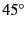 , use -1,-1,1 and so on. |
| [navigation] | auto_move_duration | float | duration for the program to move to point at an object when the space bar is pressed. Typical value: 1.4 |
| [navigation] | mouse_zoom | float | Sets the mouse zoom amount (mouse-wheel) |
| [navigation] | move_speed | float | Sets the speed of movement |
| [navigation] | zoom_speed | float | Sets the zoom speed |
| [navigation] | viewing_mode | string | if set to horizon, the viewing mode simulate an alt/azi mount, if set to equatorial, the viewing mode simulates an equatorial mount |
| [navigation] | flag_manual_zoom | bool | set to true if you want to auto-zoom in incrementally. |
| [landscape] | flag_langscape | bool | set to false if you don't want to see the landscape at all |
| [landscape] | flag_fog | bool | set to false if you don't want to see fog on start-up |
| [landscape] | flag_atmosphere | bool | set to false if you don't want to see atmosphere on start-up |
| [landscape] | flag_landscape_sets_location | bool | set to true if you want Stellarium to modify the observer location when a new landscape is selected (changes planet and longitude/latitude/altitude if that data is available in the landscape.ini file) |
| [viewing] | atmosphere_fade_duration | float | sets the time it takes for the atmosphere to fade when de-selected |
| [viewing] | flag_constellation_drawing | bool | set to true if you want to see the constellation line drawing on start-up |
| [viewing] | flag_constellation_name | bool | set to true if you want to see the constellation names on start-up |
| [viewing] | flag_constellation_art | bool | set to true if you want to see the constellation art on start-up |
| [viewing] | flag_constellation_boundaries | bool | set to true if you want to see the constellation boundaries on start-up |
| [viewing] | flag_constellation_isolate_selected | bool | when set to true, constallation lines, boundaries and art will be limited to the constellation of the selected star, if that star is ''on'' one of the constellation lines. |
| [viewing] | flag_constellation_pick | bool | set to true if you only want to see the line drawing, art and name of the selected constellation star |
| [viewing] | flag_azimutal_grid | bool | set to true if you want to see the azimuthal grid on start-up |
| [viewing] | flag_equatorial_grid | bool | set to true if you want to see the equatorial grid on start-up |
| [viewing] | flag_equator_line | bool | set to true if you want to see the equator line on start-up |
| [viewing] | flag_ecliptic_line | bool | set to true if you want to see the ecliptic line on start-up |
| [viewing] | flag_meridian_line | bool | set to true if you want to see the meridian line on start-up |
| [viewing] | flag_cardinal_points | bool | set to false if you don't want to see the cardinal points |
| [viewing] | flag_gravity_labels | bool | set to true if you want labels to undergo gravity (top side of text points toward zenith). Useful with dome projection. |
| [viewing] | flag_moon_scaled | bool | change to false if you want to see the real moon size on start-up |
| [viewing] | moon_scale | float | sets the moon scale factor, to correlate to our perception of the moon's size. Typical value: 4 |
| [viewing] | constellation_art_intensity | float | this number multiplies the brightness of the constellation art images. Typical value: 0.5 |
| [viewing] | constellation_art_fade_duration | float | sets the amount of time the constellation art takes to fade in or out, in seconds. Typical value: 1.5 |
| [viewing] | flag_chart | bool | enable chart mode on startup |
| [viewing] | flag_night | bool | enable night mode on startup |
| [viewing] | light_pollution_luminance | float | sets the level of the light pollution simulation |
| [astro] | flag_stars | bool | set to false to hide the stars on start-up |
| [astro] | flag_star_name | bool | set to false to hide the star labels on start-up |
| [astro] | flag_planets | bool | set to false to hide the planet labels on start-up |
| [astro] | flag_planets_hints | bool | set to false to hide the planet hints on start-up (names and circular highlights) |
| [astro] | flag_planets_orbits | bool | set to true to show the planet orbits on start-up |
| [astro] | flag_light_travel_time | bool | set to true to improve accuracy in the movement of the planets by compensating for the time it takes for light to travel. This has an impact on performance. |
| [astro] | flag_object_trails | bool | turns on and off drawing of object trails (which show the movement of the planets over time) |
| [astro] | flag_nebula | bool | set to false to hide the nebulae on start-up |
| [astro] | flag_nebula_name | bool | set to true to show the nebula labels on start-up |
| [astro] | flag_nebula_long_name | bool | set to true to show the nebula long labels on start-up |
| [astro] | flag_nebula_display_no_texture | bool | set to true to supress displaying of nebula textures |
| [astro] | flag_milky_way | bool | set to false to hide the Milky Way |
| [astro] | milky_way_intensity | float | sets the relative brightness with which the milky way is drawn. Typical value: 1 to 10 |
| [astro] | max_mag_nebula_name | float | sets the magnitude of the nebulae whose name is shown. Typical value: 8 |
| [astro] | nebula_scale | float | sets how much to scale nebulae. a setting of 1 will display nebulae at normal size |
| [astro] | flag_bright_nebulae | bool | set to true to increase nebulae brightness to enhance viewing (less realistic) |
| [astro] | flag_nebula_ngc | bool | enables/disables display of all NGC objects |
| [astro] | flag_telescopes | bool | enables telescope control (if set to true stellarium will attempt to connect to a telescope server according to the values in the [telescopes] section of the config file |
| [astro] | flag_telescopes_name | bool | enables/disables name labels on telescope indicators |
| [telescopes] | (telescope number) | string | In this section the ID is the number of the telescope and the value is a colon separated list of parameters: name, protocol, hostname, port number, delay. |
| [telescopes] | _ocular_ | float | Set the size of a field-of-view marker circle for telescope number . More than one marker can be defined for each telescope by using values 1, 2, ... for . |
| [init_location] | name | string | sets your location's name. This is an arbitrary string, For example, Paris |
| [init_location] | latitude | DMS | sets the latitude coordinate of the observer. Value is in degrees, minutes, seconds. Positive degree values mean North / negative South. e.g. +55d14'30.00" |
| [init_location] | longitude | DMS | sets the longitude coordinate of the observer. Value is in degrees, minutes, seconds. Positive degree values mean East / negative West. e.g. -01d37'6.00" |
| [init_location] | altitude | float | observer's altitude above mean sea level in meters, e.g. 53 |
| [init_location] | landscape_name | string | sets the landscape you see. Other options are garching, guereins, trees, moon, ocean, hurricane, hogerielen |
| [init_location] | time_zone | string | sets the time zone. Valid values: system_default, or some region/location combination, e.g. Pacific/Marquesas |
| [init_location] | time_display_format | string | set the time display format mode: can be system_default, 24h or 12h. |
| [init_location] | date_display_format | string | set the date display format mode: can be system_default, mddyyyy, ddmmyyyy or yyyymmdd (ISO8601). |
| [init_location] | home_planet | string | name of solar system body on which to start stellarium. This may be set at runtime from the TUI menu. |
| [files] | removable_media_path | string | Path to removable media (CD/DVD). This is usually only used in Digitalis planetarium products. |
| [files] | scripts_can_write_files | bool | Some scripting commands will cause files to be written. Unless this option is set to true, these scripting commands will fail. |
| Command | Argument Names | Argument Values | Notes
|
| audio | action | pause play sync | Audio functions are only available if Stellaium was compiled with the audio options. If this is not the case, a message should be printed at startup to the terminal (OSX, Linux) or stdout.txt (Windows) stating, ``This executable was compiled without audio support.'' |
| filename | AUDIO_FILENAME | Used with "play" action. Format support depends on your binary. Ogg Vorbis format is recommended. WAV format should work but is discouraged because in this case the audio track will not adjust if the script is fast forwarded. [This is a current limitation of the SDL_Mixer library.] | |
| loop | on off | Used with "play" action. Default is off | |
| output_rate | SAMPLES_PER_SECOND | For example, 44100 is CD quality audio. | |
| pause | |||
| play | |||
| sync | |||
| volume | decrement increment VOLUME_LEVEL | VOLUME_LEVEL is between 0 and 1, inclusive. | |
| clear | state | natural | Turn off fog and all labels, lines, and art. Turn planet, star, and nebula rendering on. Deselect any selected objects. Return to initial fov and viewing direction. If state is natural, ground and atmosphere will be turned on, otherwise these will be turned off. |
| date | local | [[-]YYYY-MM-DD]Thh:mm:ss | Set time to a specified date and/or time using current timezone. 'T' is literal. |
| utc | [-]YYYY-MM-DDThh:mm:ss | Set time to a specified date and time in UTC time. 'T' is literal. | |
| relative | DAYS | Change date and time by DAYS (can be fractional). | |
| load | current | Set date to current date. | |
| deselect | Deselects current object selection, including any constellation selection. See select command. | ||
| flag | atmosphere azimuthal_grid
bright_nebulae cardinal_points chart constellation_art constellation_boundaries constellation_drawing constellation_names constellation_pick ecliptic_line enable_move_keys enable_tui_menu enable_zoom_keys equator_line equatorial_grid fog gravity_labels help infos moon_scaled landscape landscape_sets_location manual_zoom menu meridian_line milky_way nebulae nebula_names night object_trails planets planet_names planet_orbits point_star script_gui_debug show_appname show_date show_fov show_fps show_gravity_ui show_script_bar show_selected_object_info show_time show_topbar show_tui_datetime show_tui_short_obj_info star_names star_twinkle stars track_object |
on 1 off 0 toggle | Set rendering flags. One argument name per command allowed currently. track_object is only useful while an object is selected. The following flags are key user settings and are not accessible from scripts: enable_move_keys enable_move_mouse enable_tui_menu enable_zoom_keys gravity_labels help horizon infos menu show_appname show_date show_fov show_fps show_gravity_ui show_time show_topbar utc_time |
| image | action | load drop | Drop images when no longer needed to improve performance. |
| altitude | ALTITUDE_ANGLE | For positioning the center of the image in horizontal coordinates. Zero is at the horizon, 90 is at the zenith. | |
| azimuth | AZIMUTH_ANGLE | For positioning the center of the image in horizontal coordinates. Zero is North, 90 is East. | |
| coordinate_system | viewport horizontal | What coordinate system to use to position the image. Must be defined at image load. Can not be changed later. Default is viewport. | |
| drop | name | drops named image from memory | |
| duration | SECONDS | How long to take to complete the command. | |
| filename | IMAGE_FILENAME | Path must be relative to script. Imsge file should be PNG or JPEG format | |
| name | IMAGE_NAME | Used to refer to the image in later calls to manipulate the image. Images must be in PNG format. Images should have dimensions that 2 raised to intenger powers of 2 (128, 256, etc.). | |
| alpha | ALPHA | 0 is transparent (default), 1 is opaque. ALPHA can be fractional. Note that images are drawn in the order they were loaded. | |
| scale | SCALE | How large to draw the image. In viewport coordinates, at 1 the image is scaled to fit maximized in the viewport. In horizontal coordinates, this defines the maximum angular width of the image in degrees. | |
| rotation | DEGREES | Absolute rotation, positive is clockwise. | |
| xpos | X_POSITION | Where to draw center of image. 0 is center of viewport, 1 is right edge of viewport. | |
| ypos | Y_POSITION | Where to draw center of image. 0 is center of viewport, 1 is top edge of viewport. | |
| landscape | load | [variable] | Load a landscape. Arguments have same names and possible values as in a landscape.ini file except that texture file names need to be specified in full including the path relative to the script. Also add argument "action load" |
| meteors | zhr | ZENITH_HOURLY_RATE | Integer number |
| look | delta_az | RADIANS | Change the viewing angle by RADIANS (azimuth) |
| delta_alt | RADIANS | Change the viewing angle by RADIANS (altitude) | |
| moveto | lat | LATITUDE | South is negative |
| lon | LONGITUDE | West is negative | |
| alt | ALTITUDE | In meters | |
| duration | SECONDS | How long to take to effect this change. | |
| script | action | play end pause resume record cancelrecord | Note that pause toggles playback. If a script plays another script, the first will terminate. |
| filename | SCRIPT_FILENAME | ||
| screenshot | prefix | filename prefix | The prefix for the screenshot file name. A numerical incrementing value will be added to this for each screenshot, and the filename extension. You must supply this option. Note that the scripts_can_write_files option in the files section of the config.ini file must be set to true for this command to work. |
| dir | screenshot directory | The directory in which the screenshot will be saved. | |
| select | If no arguments are supplied, deselects current object. (Leaves constellation selection alone.) See deselect command. | ||
| constellation | CONSTELLATION_SHORT_NAME | 3 character abbreviation from constellationship.fab, case insensitive. | |
| constellation_star | HP_NUMBER | Select the constellation which is made up by the specified star | |
| hp | HP_NUMBER | Integer Hipparcos catalogue number | |
| nebula | NEBULA_NAME | Name as defined in nebula_textures.fab | |
| planet | PLANET_NAME | Name as defined in ssystem.ini | |
| pointer | on 1 off 0 | Whether to draw the highlighting pointer around the selected object. Default is on. | |
| set | atmosphere_fade_duration | SECONDS | Number of seconds it takes for atmosphere toggle to complete |
| auto_move_duration | SECONDS | Used for auto zoom | |
| constellation_art_fade_duration | SECONDS | Number of seconds it takes for constellation art toggle to complete | |
| constellation_art_intensity | 0.0 .. 1.0 | Floating point number between 0 and 1 | |
| home_planet | PLANET_NAME | The planet name comes from the ssystem.ini file. It is case sensitive | |
| landscape_name | LANDSCAPE_NAME | The landscape ID (the name of the directory in which the landscape.ini file and textire files exist | |
| max_mag_nebula_name | MAGNITUDE | Floating point apparent magnitude value. Only label nebulas brighter than this | |
| max_mag_star_name | MAGNITUDE | Floating point apparent magnitude value. Only label nebulas brighter than this | |
| milky_way_intensity | INTENSITY | Decimal number. 1 is normal brightness | |
| moon_scale | SCALE | 1 is real size | |
| nebula_scale | SCALE | ||
| sky_culture | CUTURE_NAME | Directory name from skycultures.fab | |
| sky_locale | LOCATE_ID | 3 letter code. eng, fra, etc. | |
| star_mag_scale | MAG_SCALE | ||
| star_scale | SCALE | ||
| star_twinkle_amount | AMOUNT | 0 is no twinkling | |
| time_zone | ZONE | System dependent | |
| timerate | rate | SECONDS_PER_SECOND | Set simulation time rate. |
| pause | pause time | ||
| resume | resume time after pause | ||
| increment | increase time rate | ||
| decrement | decrease time rate | ||
| wait | duration | SECONDS | Only useful in scripts. SECONDS can be fractional. |
| zoom | auto | in initial out | "initial" returns to configured initial fov and viewing direction |
| fov | FIELD_OF_VIEW | in degrees | |
| delta_fov | DELTA_DEGREES | ||
| duration | SECONDS | Not used with delta_fov |
Stellarium uses the VSOP87 method to calculate the variation in position of the planets over time.
As with other methods, the precision of the calculations vary according to the planet and the time for which one makes the calculation. Reasons for these inaccuracies include the fact that the motion of the planet isn't as predictable as Newtonian mechanics would have us believe.
As far as Stellarium is concerned, the user should bear in mind the following properties of the VSOP87 method. Precision values here are positional as observed from Earth.
| Object(s) | Method | Notes |
| Mercury, Venus, Earth-Moon barycenter, Mars | VSOP87 | Precision is 1 arc-second from 2000 B.C. - 6000 A.D. |
| Jupiter, Saturn | VSOP87 | Precision is 1 arc-second from 0 A.D. - 4000 A.D. |
| Uranus, Neptune | VSOP87 | Precision is 1 arc-second from 4000 B.C - 8000 A.D. |
| Pluto | ? | Pluto's position is valid from 1885 A.D. -2099 A.D. |
| Earth's Moon | ELP2000-82B | Unsure about interval of validity or precision at time of writing. Possibly valid from 1828 A.D. to 2047 A.D. |
| Galilean satellites | L2 | Valid from 500 A.D - 3500 A.D. |
| 1 | Set Location | (menu group) |
| 1.1 | Latitude | Set the latitude of the observer in degrees |
| 1.2 | Longitude | Set the longitude of the observer in degrees |
| 1.3 | Altitude (m) | Set the altitude of the observer in meters |
| 1.4 | Solar System Body | Select the solar system body on which the observer is |
| 2 | Set Time | (menu group) |
| 2.1 | Sky Time | Set the time and date for which Stellarium will generate the view |
| 2.2 | Set Time Zone | Set the time zone. Zones are split into continent or region, and then by city or province |
| 2.3 | Days keys | The setting ``Calendar'' makes the - = [ ] and keys change the date value by calendar days (multiples of 24 hours). The setting ``Sidereal'' changes these keys to change the date by sidereal days |
| 2.4 | Preset Sky Time | Select the time which Stellarium starts with (if the ``Sky Time At Start-up'' setting is ``Preset Time'' |
| 2.5 | Sky Time At Start-up | The setting ``Actual Time'' sets Stellarium's time to the computer clock when Stellarium runs. The setting ``Preset Time'' selects a time set in menu item ``Preset Sky Time'' |
| 2.6 | Time Display Format | Change how Stellarium formats time values. ``system default'' takes the format from the computer settings, or it is possible to select 24 hour or 12 hour clock modes |
| 2.7 | Date Display Format | Change how Stellarium formats date values. ``system default'' takes the format from the computer settings, or it is possible to select ``yyyymmdd'', ``ddmmyyyy'' or ``mmddyyyy'' modes |
| 3 | General | (menu group) |
| 3.1 | Sky Culture | Select the sky culture to use (changes constellation lines, names, artwork) |
| 3.2 | Sky Language | Change the language used to describe objects in the sky |
| 4 | Stars | (menu group) |
| 4.1 | Show | Turn on/off star rendering |
| 4.2 | Star Magnitude Multiplier | Can be used to change the brightness of the stars which are visible at a given zoom level. This may be used to simulate local seeing conditions - the lower the value, the less stars will be visible |
| 4.3 | Maximum Magnitude to Label | Changes how many stars get labelled according to their apparent magnitude (if star labels are turned on) |
| 4.4 | Twinkling | Sets how strong the star twinkling effect is - zero is off, the higher the value the more the stars will twinkle. |
| 5 | Colors | (menu group) |
| 5.1 | Constellation Lines | Changes the colour of the constellation lines |
| 5.2 | Constellation Names | Changes the colour of the labels used to name stars |
| 5.3 | Constellation Art Intensity | Changes the brightness of the constellation art |
| 5.4 | Constellation Boundaries | Changes the colour of the constellation boundary lines |
| 5.5 | Cardinal Points | Changes the colour of the cardinal point markers |
| 5.6 | Planet Names | Changes the colour of the labels for planets |
| 5.7 | Planet Orbits | Changes the colour of the orbital guide lines for planets |
| 5.8 | Planet Trails | Changes the colour of the planet trail lines |
| 5.9 | Meridian Line | Changes the colour of the meridian line |
| 5.10 | Azimuthal Grid | Changes the colour of the lines and labels for the azimuthal grid |
| 5.11 | Equatorial Grid | Changes the colour of the lines and labels for the equatorial grid |
| 5.12 | Equator Line | Changes the colour of the equator line |
| 5.13 | Ecliptic Line | Changes the colour of the ecliptic line |
| 5.14 | Nebula Names | Changes the colour of the labels for nebulae |
| 5.15 | Nebula Circles | Changes the colour of the circles used to denote the positions of nebulae (only when enabled int he configuration file, note this feature is off by default) |
| 6 | Effects | (menu group) |
| 6.1 | Light Pollution Luminance | Changes the intensity of the light pollution simulation |
| 6.2 | Landscape | Used to select the landscape which Stellarium drawns when ground drawing is enabled |
| 6.3 | Manual zoom | Changes the behaviour of the / and \ keys. When set to ``No'', these keys zoom all the way to a level defined by object type (auto zoom mode). When set to ``Yes'', these keys zoom in and out a smaller amount and multiple presses are required |
| 6.4 | Object Sizing Rule | When set to ``Magnitude'', stars are drawn with a size based on their apparent magnitude. When set to ``Point'' all stars are drawn with the same size on the screen |
| 6.5 | Magnitude Sizing Multiplier | Changes the size of the stars when ``Object Sizing Rule'' is set to ``Magnitude'' |
| 6.6 | Milky Way intensity | Changes the brightness of the Milky Way texture |
| 6.7 | Maximum Nebula Magnitude to Label | Changes the magnitude limit for labelling of nebulae |
| 6.8 | Zoom Duration | Sets the time for zoom operations to take (in seconds) |
| 6.9 | Cursor Timeout | Sets the number of seconds of mouse inactivity before the cursor vanishes |
| 6.10 | Setting Landscape Sets Location | If ``Yes'' then chanding the landscape will move the observer to the location for that landscape (if one is known). Setting this to ``No'' means the observer location is not modified when the landscape is changed |
| 7 | Scripts | (menu group) |
| 7.1 | Local Script | Run a script from the scripts sub-directory
of the User Directory or Installation Directory (see section ) |
| 7.2 | CD/DVD Script | Run a script from a CD or DVD (only used in planetarium set-ups) |
| 8 | Administration | (menu group) |
| 8.1 | Load Default Configuration | Reset all settings according to the main configuration file |
| 8.2 | Save Current Configuration as Default | Save the current settings to the main configuration file |
| 8.3 | Shutdown | Quit Stellarium |
| 8.4 | Update me via Internet | Only used in planetarium set-ups |
| 8.5 | Set UI Locale | Change the language used for the user interface |
This document describes how Stellarium records it's star catalogues, and the related file formats.
The celestial sphere is split into zones, which correspond to the triangular faces of a geodesic sphere. The number of zones (faces) depends on the level of sub-division of this sphere. The lowest level, 0, is an icosahedron (20 faces), subsequent levels, 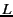 , of sub-division give the number of zones, as:
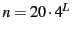Stellarium uses levels 0 to 7 in the existing star catalogues. Star Data Records contain the position of a star as an offset from the central position of the zone in which that star is located, thus it is necessary to determine the vector from the observer to the centre of a zone, and add the star's offsets to find the absolute position of the star on the celestial sphere.
This position for a star is expressed as a 3-dimensional vector which points from the observer (at the centre of the geodesic sphere) to the position of the star as observed on the celestial sphere.
Stellarium's star catalogue data is kept in the stars/default sub-directory
of the Installation Directory and/or
User Directory (see section ).
The main catalogue data is split into several files:
The stars_hip_cids_0v0_0.cat and stars_hip_sp_0v0_0.cat files contain reference data for the main catalogue files.
A given catalogue file models stars for one and only one level (i.e. for a fixed number of zones), which is recorded in the header of the file. Individual star records do not contain full positional coordinates, instead they contain coordinates relative to the central position of the zone they occupy. Thus, when parsing star catalogues, it is necessary to know about the zone model to be able to extract positional data.
|
For a given catalogue file, there may be one of three formats for
the actual star data. The variation comes from the source of the data
- the larger catalogues of fainter stars providing less data per star
than the brighter star catalogues. See tables
and for details.
The catalogue files are split into three main sections as described
in table .
|
The File Header Record describes file-wide settings. It also
contains a magic number which servers as a file type identifier.
See table .
|
The Zone Records section of the file lists the number of star
records there are per zone. The number of zones is determined from
the level value in the File Header Record, as described in section
. The Zones section is simply a list of integer values
which describe the number of stars for each zone. The total length
of the Zones section depends on the number of zones. See table .
|
After the Zones section, the actual star data starts. The star data records themselves do not contain the zone in which the star belongs. Instead, the zone is inferred from the position of the record in the file. For example, if the Zone Records section of the file says that the first 100 records are for zone 0, the next 80 for zone 1 and so on, it is possible to infer the zone for a given record by counting how many records have been read so far.
The actual record structure depends on the value of the Data Type, as found in the File Header Record.
See tables , and
for record structure details.
It should be noted that although the positional data loses accuracy as one progresses though the Star Record Types, this is compensated for by the face that the number of zones is much higher for the files where the smaller precision position fields are used, so the actual resolution on the sky isn't significantly worse for the type 1 and 2 records in practice.
|
|
|
This section includes some general notes on astronomy in an effort to outline some concepts that are helpful to understand features of Stellarium. Material here is only an overview, and the reader is encouraged to get hold of a couple of good books on the subject. A good place to start is a compact guide and ephemeris such as the National Audubon Society Field Guide to the Night Sky[]. Also recommended is a more complete textbook such as Universe[]. There are also some nice resources on the net, like the Wikibooks Astronomy book[].
The Celestial Sphere is a concept which helps us think about the positions of objects in the sky. Looking up at the sky, you might imagine that it is a huge dome or top half of a sphere, and the stars are points of light on that sphere. Visualising the sky in such a manner, it appears that the sphere moves, taking all the stars with it--it seems to rotate. If watch the movement of the stars we can see that they seem to rotate around a static point about once a day. Stellarium is the perfect tool to demonstrate this!
The apparent movement of the stars is due to the rotation of the Earth. The location of the observer on the surface of the Earth affects how she perceives the motion of the stars. To an observer standing at Earth's North Pole, the stars all seem to rotate around the zenith (the point directly directly upward). As the observer moves South towards the equator, the location of the celestial pole moves down towards the horizon. At the Earth's equator, the North celestial pole appears to be on the Northern horizon.
Similarly, observers in the Southern hemisphere see the Southern celestial pole at the zenith when they are at the South pole, and it moves to the horizon as the observer travels towards the equator.
The Celestial Equator is the line around the celestial sphere that is half way between the celestial poles - just as the Earth's equator is the line half way between the Earth's poles.
The Altitude/Azimuth coordinate system is attractive in that it is intuitive - most people are familiar with azimuth angles from bearings in the context of navigation, and the altitude angle is something most people can visualise pretty easily.
However, the altitude/azimuth coordinate system is not suitable for describing the general position of stars and other objects in the sky - the altitude and azimuth values for an object in the sky change with time and the location of the observer.
Stellarium can draw grid lines for altitude/azimuth coordinates. Use the button on the main tool-bar to activate this grid, or press the z key.
The Northern celestial pole has a declination of , the celestial equator has a declination of , and the Southern celestial pole has a declination of - .
Right ascension is measured as an angle round from a point in the
sky known as the first point of Aries,
in the same way that longitude is measured around
the Earth from Greenwich. Figure
illustrates RA/Dec coordinates.
Unlike Altitude/Azimuth coordinates, RA/Dec coordinates of a star
do not change if the observer changes latitude, and do not change
over the course of the day due to the rotation of the Earth (the story
is complicated a little by precession and parallax
- see sections and respectively
for details). RA/Dec coordinates are frequently used in star catalogues
such as the Hipparcos catalogue.
Stellarium can draw grid lines for RA/Dec coordinates. Use the button on the main tool-bar to activate this grid, or press the e key.
The length of a day is defined as the amount of time that it takes for the Sun to travel from the highest point in the sky at mid-day to the next high-point on the next day. In astronomy this is called a solar day. The apparent motion of the Sun is caused by the rotation of the Earth. However, in this time, the Earth not only spins, it also moves slightly round it's orbit. Thus in one solar day the Earth does not spin exactly on it's axis. Another way to measure day length is to consider how long it takes for the Earth to rotate exactly . This is known as one sidereal day.
Figure illustrates the motion of the Earth
as seen looking down on the Earth orbiting the Sun.. The red triangle
on the Earth represents the location of an observer. The figure shows
the Earth at four times:
the
the sizes of the Sun and Earth and not to scale. More importantly,
the distance the Earth moves around it's orbit is much exaggerated.
In one real solar day, the Earth takes a year to travel round the
Sun -
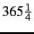
solar days. The length of a siderial day is
about 23 hours, 56 minutes and 4 seconds.
It takes exactly one sidereal day for the celestial sphere to make one revolution in the sky. Astronomers find sidereal time useful when observing. When visiting observatories, look out for doctored alarm clocks that have been set to run in sidereal time!
Astronomers typically use degrees to measure angles. Since many observations require very precise measurement, the degree is subdivided into sixty minutes of arc also known as arc-minutes. Each minute of arc is further subdivided into sixty seconds of arc, or arc-seconds. Thus one degree is equal to 3600 seconds of arc. Finer grades of precision are usually expressed using the SI prefixes with arc-seconds, e.g. milli arc-seconds (one milli arc-second is one thousandth of an arc-second).
Degrees are denoted using the symbol after a number. Minutes of arc are denoted with a ', and seconds of arc are denoted using ''. Angles are frequently given in two formats:
|
For example, consider two 100 watt lamps, one which is a few meters away, and one which is a kilometre away. Both give out the same amount of light - they have the same absolute magnitude. However the nearby lamp seems much brighter - it has a much greater apparent magnitude. When astronomers talk about magnitude without specifying whether they mean apparent or absolute magnitude, they are usually referring to apparent magnitude.
The magnitude scale has its roots in antiquity. The Greek astronomer Hipparchus defined the brightest stars in the sky to be first magnitude, and the dimmest visible to the naked eye to be sixth magnitude. In the 19th century British astronomer Norman Pogson quantified the scale more precisely, defining it as a logarithmic scale where a magnitude 1 object is 100 times as bright as a magnitude 6 object (a difference of five magnitudes). The zero-point of the modern scale was originally defined as the brightness of the star Vega, however this was re-defined more formally in 1982[]. Objects brighter than Vega are given negative magnitudes.
The absolute magnitude of a star is defined as the magnitude a star would appear if it were 10 parsecs from the observer.
Table lists several objects that may be
seen in the sky, their apparent magnitude and their absolute magnitude
where applicable (only stars have an absolute magnitude value. The
planets and the Moon don't give out light
like a star does - they reflect the light from the Sun).
. The angle between
the axis of rotation and the perpendicular of the orbital plane
is called the obliquity of the ecliptic.
It is
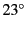
27'.
Observed over very long periods of time the direction the axis of
rotation points does actually change. The angle between the axis of
rotation and the orbital plane stays constant, but the direction the
axis points--the position of the celestial pole transcribes a circle
on the stars in the celestial sphere. This process is called precession.
The motion is similar to the way in which a gyroscope slowly twists
as figure illustrates.
Precession is a slow process. The axis of rotation twists through a full about once every 28,000 years.
Precession has some important implications:
This can be demonstrated by holding ones thumb up at arm's length. Closing one eye, note the position of the thumb against the background. After swapping which eye is open (without moving), the thumb appears to be in a different position against the background.
A similar thing happens due to the Earth's motion around the Sun.
Nearby stars appear to move against more distant background
stars, as illustrated in figure . The movement
of nearby stars against the background is called stellar parallax,
or annual parallax.
Since we know the distance the radius of the Earth's orbit around the Sun from other methods, we can use simple geometry to calculate the distance of the nearby star if we measure annual parallax.
In figure the annual parallax p is half
the angular distance between the apparent positions of the nearby
star. The distance of the nearby object is d. Astronomers use
a unit of distance called the parsec which is defined
as the distance at which a nearby star has p = 1''.
Even the nearest stars exhibit very small movement due to parallax. The closest star to the Earth other than the Sun is Proxima Centuri. It has an annual parallax of 0.77199'', corresponding to a distance of 1.295 parsecs (4.22 light years).
Even with the most sensitive instruments for measuring the positions of the stars it is only possible to use parallax to determine the distance of stars up to about 1,600 light years from the Earth, after which the annual parallax is so small it cannot be measured accurately enough.
Proper motion is the change in the position of a star over time as a result of it's motion through space relative to the Sun. It does not include the apparent shift in position of star due to annular parallax. The star exhibiting the greatest proper motion is Barnard's Star which moves more then ten seconds of arc per year.
This chapter focuses on the observational side of astronomy--what we see when we look at the sky.
Without a doubt, the most prominent object in the sky is the Sun. The Sun is so bright that when it is in the sky, it's light is scattered by the atmosphere to such an extent that almost all other objects in the sky are rendered invisible.
The Sun is a star like many others but it is much closer to the Earth at approximately 150 million kilometres. The next nearest star, Proxima Centuri is approximately 260,000 times further away from us than the Sun! The Sun is also known as Sol, it's Latin name.
Over the course of a year, the Sun appears to move round the celestial sphere in a great circle known as the ecliptic. Stellarium can draw the ecliptic on the sky. To toggle drawing of the ecliptic, press the 4 or , key.
WARNING: Looking at the Sun can permanently damage the eye. Never look at the Sun without using the proper filters! By far the safest way to observe the Sun it to look at it on a computer screen, courtesy of Stellarium!
The Sun is just one of billions of stars. Even though many stars have a much greater absolute magnitude than the Sun (the give out more light), they have an enormously smaller apparent magnitude due to their large distance. Stars have a variety of forms--different sizes, brightnesses, temperatures, and colours. Measuring the position, distance and attributes of the stars is known as astrometry, and is a major part of observational astronomy.
Many stars have a stellar companions. As many as six stars can be found orbiting one-another in close association. Such associations are known a multiple star systems--binary systems being the most common with two stars. Multiple star systems are more common than solitary stars, putting our Sun in the minority group.
Sometimes multiple stars orbit one-another in a way that means one will periodically eclipse the other. These eclipsing binaries or Algol variables
Sometimes two or more stars appear to be very close to one another in the sky, but in fact have great separation, being aligned from the point of view of the observer but of different distances. Such pairings are known as optical doubles and optical multiples.
The constellations are groupings of
stars that are visually close to one another in the sky. The actual
groupings are fairly arbitrary--different cultures have group stars
together into different constellations. In many cultures, the various
constellations have been associated with mythological entities. As
such people have often projected pictures into the skies as can be
seen in figure which shows the constellation
of Ursa Major. On the left is a picture
with the image of the mythical Great Bear, on the right only a line-art
version is shown. The seven bright stars of Ursa Major are widely
recognised, known variously as ``the plough'', the ``pan-handle'',
and the ``big dipper''. This sub-grouping is known as an asterism--a
distinct grouping of stars. On the right, the picture of the bear
has been removed and only a constellation diagram
remains.
Stellarium can draw both constellation diagrams and artistic representations of the constellations. Multiple sky cultures are supported: Western, Polynesian, Egyptian and Chinese constellations are available, although at time of writing the non-Western constellations are not complete, and as yet there are no artistic representations of these sky-cultures.H.1.
Aside from historical and mythological value, to the modern astronomer the constellations provide a way to segment the sky for the purposes of describing locations of objects, indeed one of the first tasks for an amateur observer is learning the constellations--the process of becoming familiar with the relative positions of the constellations, at what time of year a constellation is visible, and in which constellations observationally interesting objects reside. Internationally, astronomers have adopted the Western (Greek/Roman) constellations as a common system for segmenting the sky. As such some formalisation has been adopted, each constellation having a proper name, which is in Latin, and a three letter abbreviation of that name. For example, Ursa Major has the abbreviation UMa.
Stars can have many names. The brighter stars often have common names relating to mythical characters from the various traditions. For example the brightest star in the sky, Sirius is also known as The Dog Star (the name Canis Major--the constellation Sirius is found in--is Latin for ``The Great Dog'').
There are several more formal naming conventions that are in common use.
German astronomer Johan Bayer devised one such system in the 16-17th century. His scheme names the stars according to the constellation in which they lie prefixed by a lower case Greek letter, starting at for the brightest star in the constellation and proceeding with 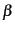 , 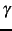 , ... in descending order of apparent magnitude. For example, such a Bayer Designation for Sirius is `` Canis Majoris'' (note that the genitive form of the constellation name is used). There are some exceptions to the descending magnitude ordering, and some multiple stars (both real and optical) are named with a numerical superscript after the Greek letter, e.g.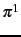 ... 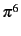 Orionis.
English astronomer John Flamsteed numbered stars in each constellation in order of increasing right ascension followed by the form of the constellation name, for example ``61 Cygni''.
As described in section , various
star catalogues assign numbers to stars, which are often used in addition
to other names. Stellarium gets it's star data from the Hipparcos
catalogue,and as such stars in Stellarium are generally referred to
with their Hipparcos number, e.g. ``HP 62223''. Figure
shows the information Stellarium displays when a star is selected.
At the top, the common name and Flamsteed designation are shown, followed
by the RA/Dec coordinates, apparent magnitude,
distance and Hipparcos number.
Stars have many different colours. Seen with the naked eye most appear to be white, but this is due to the response of the eye--at low light levels the eye is not sensitive to colour. Typically the unaided eye can start to see differences in colour only for stars that have apparent magnitude brighter than 1. Betelgeuse, for example has a distinctly red tinge to it, and Sirius appears to be blueH.2.
By splitting the light from a star using a prism attached to a telescope and measuring the relative intensities of the colours of light the star emits--the spectra--a great deal of interesting information can be discovered about a star including its surface temperature, and the presence of various elements in its atmosphere.
Astronomers groups stars with similar spectra into spectral
types, denoted by one of the following
letters: O, B, A, F, G, K and MH.3. Type O stars have a high surface temperature (up to around 50,
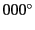
K)
while the at other end of the scale, the M stars are red and have
a much cooler surface temperature, typically
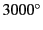
K. The
Sun is a type G star with a surface temperature of around 5,
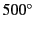
K.
Spectral types may be further sub-divided using a numerical suffixes
ranging from 0-9 where 0 is the hottest and 9 is the coolest. Table
shows the details of the various spectral
types.
For about 90% of stars, the absolute magnitude increases as the spectral type tends to the O (hot) end of the scale. Thus the whiter, hotter stars tend to have a greater luminosity. These stars are called main sequence stars. There are however a number of stars that have spectral type at the M end of the scale, and yet they have a high absolute magnitude. These stars have a very large size, and consequently are known as giants, the largest of these known as super-giants.
There are also stars whose absolute magnitude is very low regardless of the spectral class. These are known as dwarf stars, among them white dwarfs and brown dwarfs.
A luminosity class is an indication
of the type of star--whether it is main sequence, a giant or a dwarf.
Luminosity classes are denoted by a number in roman numerals, as described
in table .
|
Plotting the luminosity of stars against their spectral type/surface
temperature, gives a diagram called a Hertzsprung-Russell diagram
(after the two astronomers Ejnar Hertzsprung
and Henry Norris Russell who
devised it). A slight variation of this is see in figure
(which is technically a colour/magnitude plot).
Most stars are of nearly constant luminosity. The Sun is a good example of one which goes through relatively little variation in brightness (usually about 0.1% over an 11 year solar cycle). Many stars, however, undergo significant variations in luminosity, and these are known as variable stars. There are many types of variable stars falling into two categories intrinsic and extrinsic.
Intrinsic variables are stars which have intrinsic variations in brightness, that is the star itself gets brighter and dimmer. There are several types of intrinsic variables, probably the best-known and more important of which is the Cepheid variable whose luminosity is related to the period with which it's brightness varies. Since the luminosity (and therefore absolute magnitude) can be calculated, Cepheid variables may be used to determine the distance of the star when the annual parallax is too small to be a reliable guide.
Extrinsic variables are stars of constant brightness that show changes in brightness as seen from the Earth. These include rotating variables, or stars whose apparent brightness change due to rotation, and eclipsing binaries.
The Moon is the large satellite which orbits the Earth approximately every 28 days. It is seen as a large bright disc in the early night sky that rises later each day and changes shape into a crescent until it disappears near the Sun. After this it rises during the day then gets larger until it again becomes a large bright disc again.
As the moon moves round its orbit, the amount that is
illuminated by the sun as seen from a vantage point on Earth changes.
The result of this is that approximately once per orbit, the moon's
face gradually changes from being totally in shadow to being fully
illuminated and back to being in shadow again. This process is divided
up into various phases as described in table
.
|
Unlike the stars whose relative positions remain more or less constant, the planets seem to move across the sky over time (the word ``planet'' comes from the Greek for ``wanderer''). The planets are, like the Earth, massive bodies that are in orbit around the Sun. Until 2006 there was no formal definition of a planet leading to some confusion about the classification for some bodies widely regarded as being planets, but which didn't seem to fit with the others.
In 2006 the International Astronomical Union defined a planet as a celestial body that, within the Solar System:a) is in orbit around the Sun
b) has sufficient mass for its self-gravity to overcome rigid body forces so that it assumes a hydrostatic equilibrium (nearly round) shape; and
c) has cleared the neighbourhood around its orbitor within another system:i) is in orbit around a star or stellar remnants
ii) has a mass below the limiting mass for thermonuclear fusion of deuterium; and
iii) is above the minimum mass/size requirement for planetary status in the Solar System.
The planets closest to the sun are called collectively the terrestrial planets. The terrestrial planets are: Mercury, Venus, Earth and Mars.
The terrestrial planets are relatively small, comparatively dense, and have solid rocky surface. Most of their mass is made from solid matter, which is mostly rocky and/or metallic in nature.
Jupiter, Saturn, Uranus and Neptune make up the Jovian planets. They are much more massive than the terrestrial planets, and do not have a solid surface. Jupiter is the largest of all the planets with a mass over 300 times that of the Earth!
The Jovian planets do not have a solid surface - the vast majority of their mass being in gaseous form (although they may have rocky or metallic cores). Because of this, they have an average density which is much less than the terrestrial planets. Saturn's mean density is only about 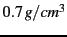 - it would float in water!H.4
As well as the Major Planets, the solar system also contains innumerable smaller bodies in orbit around the Sun. These are generally classed as the minor planets, or planetoids, and include asteroids, and [sometimes?] comets.
Asteroids are celestial bodies orbiting the Sun in more or less regular orbits mostly between Mars and Jupiter. They are generally rocky bodies like the inner (terrestrial) planets, but of much smaller size. There are countless in number ranging in size from about ten meters to thousands of kilometres.
A comet is a small body in the solar system that orbits the Sun and (at least occasionally) exhibits a coma (or atmosphere) and/or a tail.
Comets have a very eccentric orbit (very elliptical), and as such spend most of their time a very long way from the Sun. Comets are composed of rock, dust and ices. When they come close to the Sun, the heat evaporates the ices, causing a gaseous release. This gas, and loose material which comes away from the body of the comet is swept away from the Sun by the Solar wind, forming the tail.
Comets whose orbit brings them close to the Sun more frequently than every 200 years are considered to be short period comets, the most famous of which is probably Comet Halley, named after the British astronomer Edmund Halley, which has an orbital period of roughly 76 years.
Stars, it seems, are gregarious - they like to live together in groups. These groups are called galaxies. The number of stars in a typical galaxy is literally astronomical - many billions - sometimes ever hundreds of billions of stars!
Our own star, the sun, is part of a galaxy. When we look up at the night sky, all the stars we can see are in the same galaxy. We call our own galaxy the Milky Way (or sometimes simply ``the Galaxy'').
Other galaxies appear in the sky as dim fuzzy blobs. Only four are normally visible to the naked eye. The Andromeda galaxy (M31) visible in the Northern hemisphere, the two Magellanic clouds, visible in the Southern hemisphere, and the home galaxy Milky Way, visible in parts from north and south under dark skies.
There are thought to be billions of galaxies in the universe comprised of an unimaginably large number of stars.
The vast majority of galaxies are so far away that they are very dim, and cannot be seen without large telescopes, but there are dozens of galaxies which may be observed in medium to large sized amateur instruments. Stellarium includes images of many galaxies, including the Andromeda galaxy (M31), the Pinwheel Galaxy (M101), the Sombrero Galaxy (M104) and many others.
Astronomers classify galaxies according to their appearance. Some classifications include spiral galaxies, elliptical galaxies, lenticular galaxies and irregular galaxies.
It's a little hard to work out what our galaxy would look like from far away, because when we look up at the night sky, we are seeing it from the inside. All the stars we can see are part of the Milky Way, and we can see them in every direction. However, there is some structure. There is a higher density of stars in particular places.
There is a band of very dense stars running right round the sky in huge irregular stripe. Most of these stars are very dim, but the overall effect is that on very dark clear nights we can see a large, beautiful area of diffuse light in the sky. It is this for which we name our galaxy.
The reason for this effect is that our galaxy is somewhat like a disc, and we are off to one side. Thus when we look towards the centre of the disc, we see more a great concentration of stars (there are more star in that direction). As we look out away from the centre of the disc we see fewer stars - we are staring out into the void between galaxies!
Seen with the naked eye, binoculars or a small telescope, a nebula (plural nebulae) are fuzzy patches on the sky. Historically, the term referred to any extended object, but the modern definition excludes some types of object such as galaxies.
Observationally, nebulae are popular objects for amateur astronomers - they exhibit complex structure, spectacular colours and a wide variety of forms. Many nebulae are bright enough to be seen using good binoculars or small to medium sized telescopes, and are a very photogenic subject for astro-photographers.
Nebulae are associated with a variety of phenomena, some being clouds of interstellar dust and gas in the process of collapsing under gravity, some being envelopes of gas thrown off during a supernova event (so called supernova remnants), yet others being the remnants of solar systems around dead stars (planetary nebulae).
Examples of nebulae for which Stellarium has images include the Crab Nebula (M1), which is a supernova remnant and the Dumbbell Nebula (M27) which is a planetary nebula.
Eclipses occur when an apparently large celestial body (planet, moon etc.) moves between the observer (that's you!) and a more distant object - the more distant object being eclipsed by the nearer one.
Solar eclipses occur when our Moon moves between the Earth and the Sun. This happens when the inclined orbit of the Moon causes its path to cross our line of sight to the Sun. In essence it is the observer falling under the shadow of the moon.
There are three types of solar eclipses:
Astronomers have made various catalogues of objects in the heavens. Stellarium makes use of several well known astronomical catalogues.
Hipparcos (for High Precision Parallax Collecting Satellite) was an astrometry mission of the European Space Agency (ESA) dedicated to the measurement of stellar parallax and the proper motions of stars. The project was named in honour of the Greek astronomer Hipparchus.
Ideas for such a mission dated from 1967, with the mission accepted by ESA in 1980. The satellite was launched by an Ariane 4 on 8 August 1989. The original goal was to place the satellite in a geostationary orbit above the earth, however a booster rocket failure resulted in a highly elliptical orbit from 315 to 22,300 miles altitude. Despite this difficulty, all of the scientific goals were accomplished. Communications were terminated on 15 August 1993.
The program was divided in two parts: the Hipparcos experiment whose goal was to measure the five astrometric parameters of some 120,000 stars to a precision of some 2 to 4 milli arc-seconds and the Tycho experiment, whose goal was the measurement of the astrometric and two-colour photometric properties of some 400,000 additional stars to a somewhat lower precision.
The final Hipparcos Catalogue (120,000 stars with 1 milli arc-second level astrometry) and the final Tycho Catalogue (more than one million stars with 20-30 milli arc-second astrometry and two-colour photometry) were completed in August 1996. The catalogues were published by ESA in June 1997. The Hipparcos and Tycho data have been used to create the Millennium Star Atlas: an all-sky atlas of one million stars to visual magnitude 11, from the Hipparcos and Tycho Catalogues and 10,000 non-stellar objects included to complement the catalogue data.
There were questions over whether Hipparcos has a systematic error of about 1 milli arc-second in at least some parts of the sky. The value determined by Hipparcos for the distance to the Pleiades is about 10% less than the value obtained by some other methods. By early 2004, the controversy remained unresolved.
Stellarium uses the Hipparcos Catalogue for star data, as well as having traditional names for many of the brighter stars. The stars tab of the search window allows for searching based on a Hipparcos Catalogue number (as well as traditional names), e.g. the star Sadalmelik in the constellation of Aquarius can be found by searching for the name, or it's Hipparcos number, 109074.
Link to messier page !!!!!!
Stellarium includes images of many Messier objects.
Being able to estimate angular distance can be very useful when trying to find objects from star maps in the sky. One way to do this with a device called a crossbowH.7.
Crossbows are a nice way get an idea of angular distances, but carrying
one about is a little cumbersome. A more convenient alternative is
to hold up an object such as a pencil at arm's length. If you know
the length of the pencil,
, and the distance of it from your eye,
, you can calculate it's angular size,  using this formula:
using this formula:
Another, more handy (ahem!) method is to use the size of your hand at arm's length:
, you will work out your own
``handy angles''.
As described in section , your hand at arm's
length provides a few useful estimates for angular size. It's useful
to know if your handy angles are typical, and if not, what they are.
The method here below is just one way to do it--feel free to use
another method of your own construction!
Hold your hand at arm's length with your hand open--the tips of your thumb and little finger as far apart as you can comfortably hold them. Get a friend to measure the distance between your thumb and your eye, we'll call this . There is a tendency to over-stretch the arm when someone is measuring it--try to keep the thumb-eye distance as it would be if you were looking at some distant object.
Without changing the shape of your hand, measure the distance between
the tips of your thumb and little finger. It's probably easiest to
mark their positions on a piece of paper and measure the distance
between the marks, we'll call this
. Using some simple trigonometry,
we can estimate the angular distance
:
Repeat the process for the distance across a closed fist, three fingers and the tip of the little finger.
For example, for the author cm, cm, so:
 |
|||
|
Remember that handy angles are not very precise--depending on your posture at a given time the values may vary by a fair bit.
Write a script which shows a tour of five of your favourite messier objects.